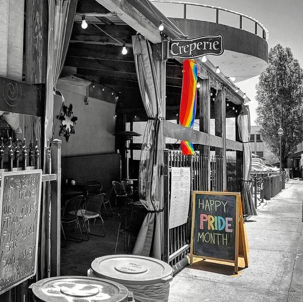

Our Story
Flagstaff restaurants are a staple of this historic town, and our creperie fits right in with a mix of progressive and unconventional elegance.
French tradition, New Jersey flair
We make every crepe by hand to suit both sweet and savory cravings. It's our creative spin on a traditional French food, with a bit of New Jersey flair.
The crepe goes back centuries, starting as a simple buckwheat flat cake eaten across the French countryside. It has always been loved for being simple and wholesome, and we keep that spirit while having some fun with the fillings.
An alley patio downtown

You'll find us right in historic downtown Flagstaff, in the alley outside the Old Town Shops near Heritage Square. All of our seating is on a covered outdoor patio. It's a relaxed spot to sit, cool off, watch your crepe being made and take in downtown, and dogs are welcome too.
- Dog-friendly patio
- Covered outdoor patio
Because the patio is open-air, we're open seasonally, from the first Friday in May through Halloween.